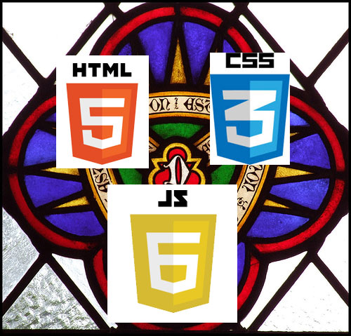
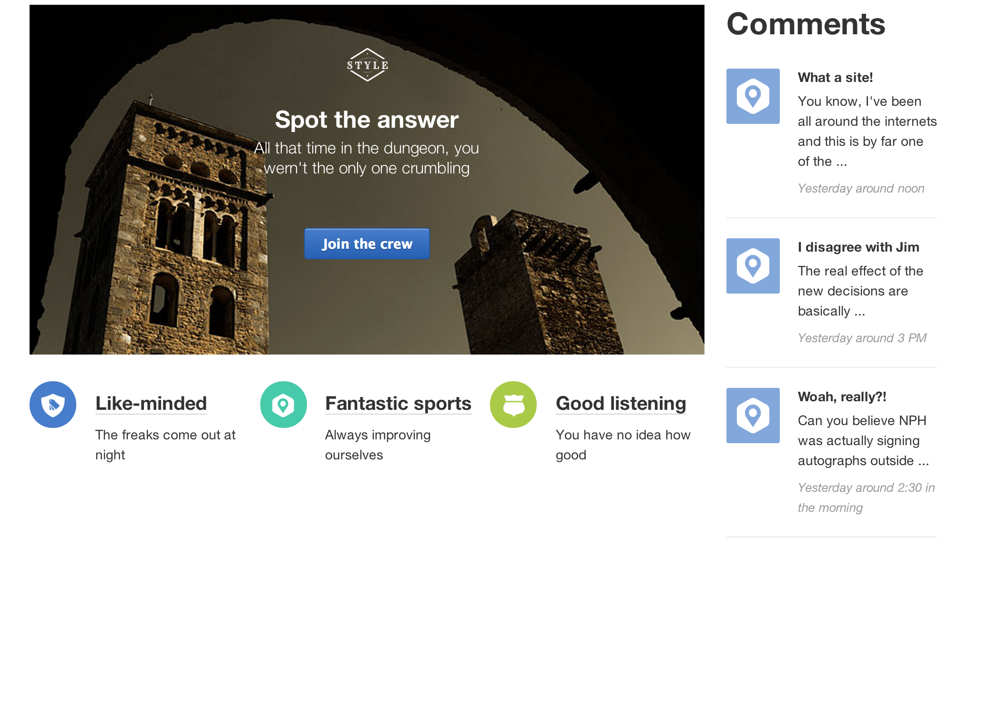
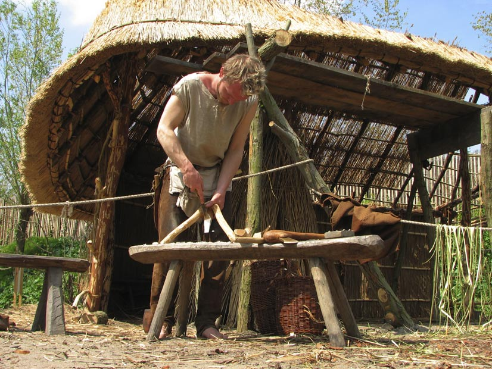
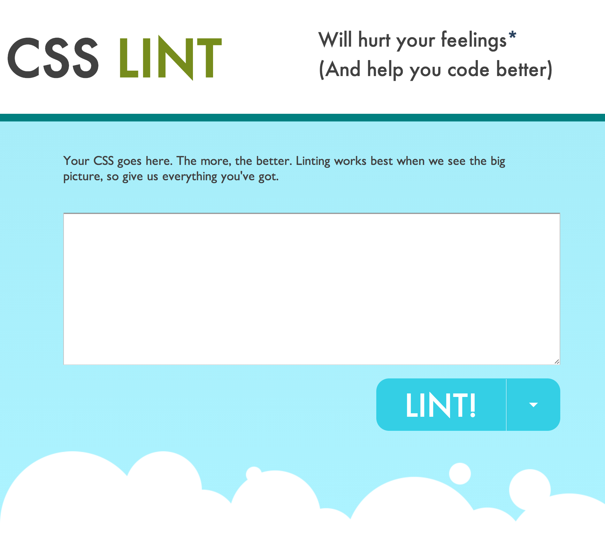

Spike Lean Visual Design Directly into Your Live Style Guide
QCon New York, June 2014
@wardpenney
Who has worked with a Live Style Guide?
Style Guides for Development
What do they have in common?
- Set the guardrails for a scalable team
- Toolbox of "quick" solutions to already-solved problems
- Representation of patterns
Style Guides for Frontend
(Live Style Guides)
A little bit Design, Development and Content
Goals of a LSG
- Source for typography, colors and patterns
- Houses names of patterns
- Shows code examples
Three new goals
- Best place for a design spike
- Drive out a site-wide refactor
- Aid with regression testing
#1: The design spike
“I would often ask Kent [Beck], ‘What is the simplest thing we can program that will convince us we are on the right track?’ Such stepping outside the difficulties at hand often led us to simpler and more compelling solutions. Kent dubbed this a Spike.” Ward Cunningham
A few key phrases
- "the simplest thing"
- "stepping outside"
- "compelling solutions"
Example spikes
- What if we put in a responsive grid?
- What can we do to clean up those modals?
- Can we make that slider easier to touch for mobile users?
- Try out a fancy sparkle-effect. That's right.
Get answers now!
You are sculpting in the medium! Designers and developers instantly see the design in-browser (and where it breaks down).
- Try in responsive (best win)
- Quickly explore edge cases
- Discover new awesomeness
- Try it on your phone
- Handle touch events
Repsonsive made easy!
It is soooo much easier to do this in browser. You begin to naturally understand and spot basic expansion behavors.
Two requirements to Spike
- Low cost of execution
- A few team members willing to help out
Low cost of execution
The holy trinity

- HTML
- CSS
- Javascript (optional)
Team members help
The best part, is that any team member can design spike in the LSG, when paired. As long as one of them is capable enough. Also great for knowledge transfer.
- Developer + Designer
- Designer + (code-savvy) Designer
- Developer + Product
- Prodcut + (code-savvy) Designer
#2: Drive out a site-wide refactor
A large SASS codebase 6+ years old
- A massive amount of tiny regressions we had to chase down.
- Reading and pulling apart the spaghetti SASS took FOREVER
- A Rube Goldberg file structure ensued, with old and new intermingled and interconnected
The clean spot method
Idea from @NicoleSullivan
- Create a new CSS load path
- Include relevent variables (colors, typeface)
- Select a few representative pages
- Build all the new things
A problem for design
The map is not the terrain,
the pattern is not the page.
The map is not the terrain
The pattern is not the page.
Style Tile to the rescue!

Pioneered by Samantha Warren @samanthatoy
I use it to drive out a site refactor.
A quick SASS primer
- SASS (CSS) styling must work in harmony
- You may have many small SASS files, but generally they aggregate into a file, and onto the page
Large SASS refactor cheat-sheet
- Set up your clean spot load path
- Set up your new Live Style Guide route
- Set up your new Style Tile route
- Pick a candidate page (I like the most-trafficked one)
- Spike the page directly into the new Style Tile
- Extract the patterns into the Style Guide as you go!
- Write stories to implement into site, switching their load paths one-by-one to the new CSS
Build your front-end from the ground-up
- It takes too much time to untangle unsustainable CSS practices
- Refactor your design and throw away patterns you don't need anymore
- Instill good practices from the start
Common complications
When you switch the CSS load path to the new clean spot, there are two common big pain points:
- Shared templates
- Libraries that generate markup
Shared templates in the LSG
Canniballize the low cost of execution
- increase the difficulty of a Spike
- require more knowledge of the whole stack
- couple the LSG to the site, making it inflexible
Dealing with shared templates
I have tried or seen these attempted solutions:
Conform your new CSS to old markup (gross)
Really hard and you don't get the benefit of refactoring. Perpetuates old practices
Render "new" versions of the templates
- Awesome, if you can pull it off
- Frees you from old junk
- Fastest refactor when pattern in place
Libraries that generate markup
SimpleForm (Rails) always bites me on this...
Additional classes for libraries
- Best when markup is small (form fields)
- Keeps old structure in place
- Runs in both old and new load paths
#3 Aid with regression testing
Visual testing today:
The bronze age

Lots of approaches:
There are several approaches out there today:
- Image-difference
- Direct assertion
- Linting
Image-difference
Before vs. after screenshot of select pages
- Wraith
- Huxley
- GreenOnion
- Needley
- CSSCritic
Direct Assertion
Assert against nored on the page.
Linting
CSSLint, by Nicholas C. Zakas and Nicole Sullivan

A new hope
- Whitelist patterns in your Style Guide
- Treat them as "green"
- Assert patterns against the site
An example test
context "some context", style_cop: true do
it "tests something" do
visit "/homepage"
pattern = page.find(".hero")
expect(selector).to match_styleguide("/style")
end
end
The Live Style Guide becomes the green
Your implementation is the red
Re-define of Live Style Guide
The Live Style Guide isn't fine china, it's your sandbox
It is now...
- Your place to explore safely
- Your place to transfer front-end knowledge quickly
- Your place to Spike
- Your place to begin anew!